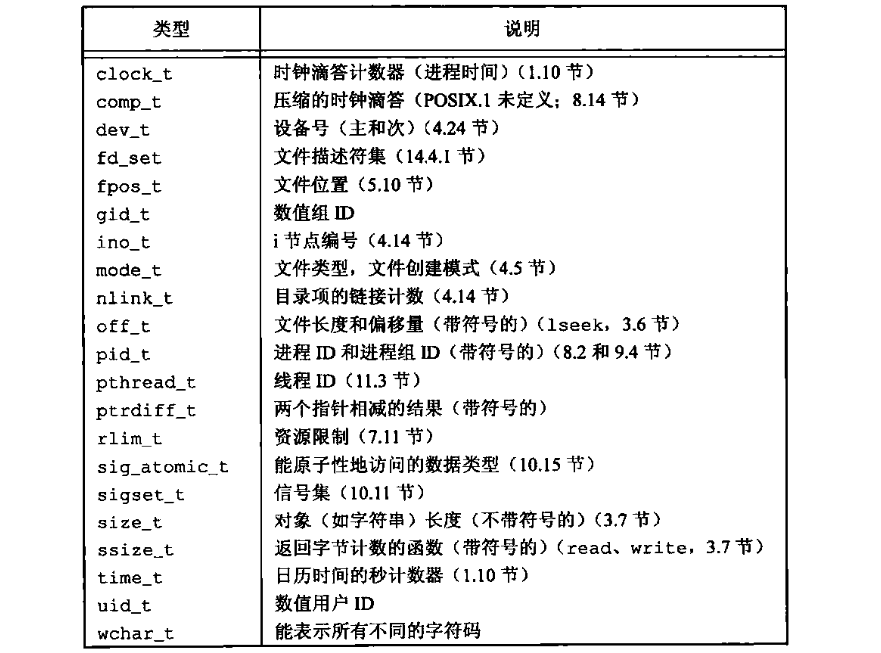
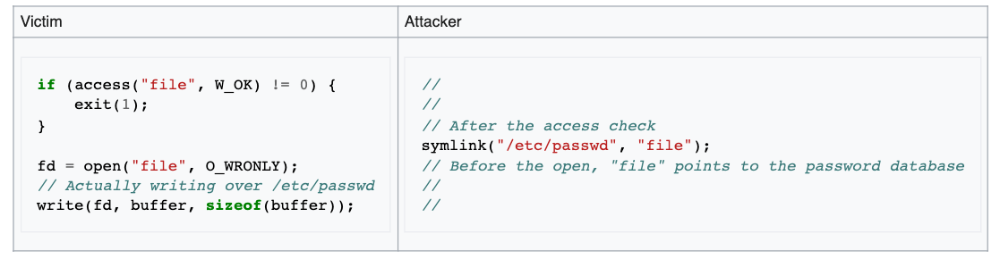
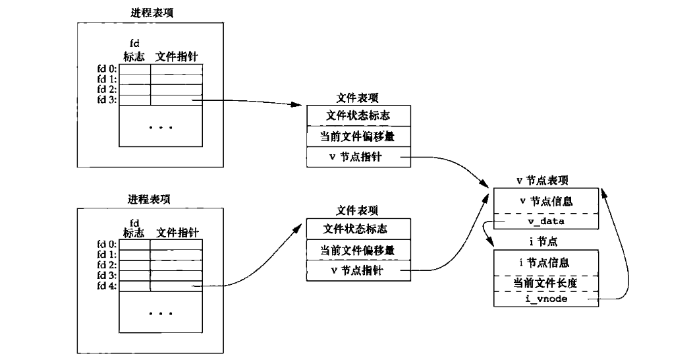
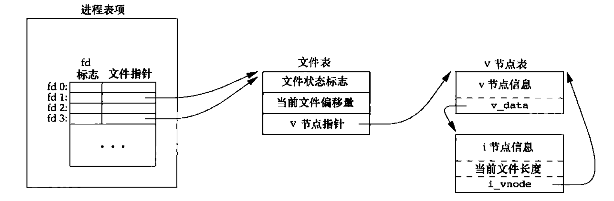

《Unix 环境高级编程（第三版）》读书笔记（第 1-5 章）
继续整理书架上的经典老书。相关代码和注释可以参考这里。
第 1 章 - Unix 基础知识
- 口令文件（/etc/passwd）中记载了有关登录用户的信息：
- 登录名；
- 加密口令（已被移到另一个文件中）；
- 用户 ID；
- 用户 ID 为 0 的用户为超级用户，登录名通常为 “root”。
- 组 ID；
- 组文件 “/etc/group” 将组名映射为数值的组 ID；
- 允许同组的各个成员之间共享资源。
- 注释字段；
- 用户登录后的起始目录；
- 默认的 Shell 程序。
- Shell：
- POSIX 1003.2 对 Shell 进行了标准化；
- 几种常见的 Shell 版本：
- Bourne Shell (bash)：由 Steve Bourne 在贝尔实验室开发；
- Borune-again Shell：GNU Shell，设计遵循 POSIX 标准，也保留了与 bash 的兼容性；
- C Shell：由 Bill Joy 于伯克利开发，控制流类似于 C 语言；
- Korn Shell：由贝尔实验室的 David Korn 开发；
- TENEX C Shell：C Shell 的加强版，从 TENEX 系统借鉴了很多特色。
- POSIX.1 推荐将文件名限制在以下字符集之内：“a-zA-Z0-9.-_”。
- 一个进程内的所有线程共享同一地址空间、文件描述符、栈以及与进程相关的属性。
- 整型变量 errno：被设置为具有特定错误信息的值。
- 在多线程环境中，每个线程都有属于自己的局部 errno 值；
- 如果没有出错，该值不会被清除。因此，仅当函数的返回值指明出错时，才检验其值；
- 任何函数都不会将该值设为 0。
- 时间值：
- 日历时间：自 UTC 时间 1970 年 1 月 1 日 00:00:00 以来经过的秒数累计值。常用
time_t类型保存； - 进程时间（CPU 时间）：用来度量进程使用的处理器资源，以“时钟滴答”计算。常用
clock_t类型保存；- 时钟时间（墙上时钟时间）：进程运行的时间总量；
- 用户 CPU 时间：执行用户指令所用的时间量；
- 系统 CPU 时间：为该进程执行内核指令所用的时间量。
- Unix 所使用的技术是为每个系统调用在标准 C 库中设置一个具有同样名字的函数。
第 2 章 - Unix 标准及实现
- Unix 标准化：
- ISO C 标准：
- 定义了 C 语言的语法、语义，以及标准库；
- 该标准由 WG14 工作组负责维护；
- 标准头文件：
| 头文件 | 说明 |
|---|---|
| <assert.h> | 提供带有条件编译的宏，用于支持断言。 |
| <complex.h> (since C99) | 支持复数计算。 |
| <ctype.h> | 提供针对字符的类型检测函数，如 isalpha。 |
| <errno.h> | 提供与错误处理相关的宏。 |
| <fenv.h> (since C99) | 提供与浮点数环境相关的函数。 |
| <float.h> | 有关浮点数类型的常量。 |
| <inttypes.h> (since C99) | 提供针对整数的类型转换能力。 |
| <iso646.h> (since C95) | 提供一组帮助非 QWERTY 键盘的地区使用 C 语言逻辑运算符的宏。 |
| <limits.h> | 有关整数类型的常量。 |
| <locale.h> | 提供有关本地化的功能。 |
| <math.h> | 提供常见的数学处理函数。 |
| <setjmp.h> | 提供非本地跳转能力。 |
| <signal.h> | 提供信号处理能力。 |
| <stdalign.h> (since C11) | 提供有关对齐的功能。 |
| <stdarg.h> | 支持可变长参数函数。 |
| <stdatomic.h> (since C11) | 支持原子操作。 |
| <stdbit.h> (since C23) | 以“字节”或“位”的视角检索类型的宏。 |
| <stdbool.h> (since C99) | 提供布尔类型的宏。 |
| <stdckdint.h> (since C23) | 有关检查整数操作是否溢出的宏。 |
| <stddef.h> | 提供了常用的宏定义。 |
| <stdint.h> (since C99) | 提供固定长度的整数类型，如 int32_t。 |
| <stdio.h> | 支持 IO 操作。 |
| <stdlib.h> | 提供了实用程序：内存管理、字符串转换、随机数、算法等。 |
| <stdnoreturn.h> (since C11) | 提供了对 “noreturn” 封装的宏。 |
| <string.h> | 提供字符串处理函数。 |
| <tgmath.h> (since C99) | 提供了泛型的基础数学处理函数。 |
| <threads.h> (since C11) | 支持线程相关操作。 |
| <time.h> | 提供日期/时间处理函数。 |
| <uchar.h> (since C11) | 提供 UTF-16 和 UTF-32 字符处理函数。 |
| <wchar.h> (since C95) | 提供针对扩展的多字节和宽字符处理函数。 |
| <wctype.h> (since C95) | 提供针对宽字符的类型检测函数，如 iswalpha。 |
- IEEE POSIX：
- 可移植操作系统接口（Portable Operating System Interface），包括很多标记为 1003 的标准和草案；
- 标准 IEEE Std 1003.1 - 操作系统接口标准，定义了“符合 POSIX 的”操作系统必须提供的各种服务（接口）；
- POSIX.1（1003.1）中的 X/Open（XSI）系统接口选项描述了可选的接口，也定义了 “遵循 XSI” 的实现必须支持哪些部分。
- Single UNIX Specification (SUS)：POSIX.1 的一个超集，定义的一些附加接口扩展了 POSIX.1 规范提供的功能。该标准由 X/Open 和开放系统软件基金会（OSF）共同出版。一个系统想要称为 Unix 系统，则必须支持这些接口。Unix 系统供应商必须以文件形式提供符合性声明，并通过验证符合性测试，才能得到使用 Unix 商标的许可证。
- Unix 系统实现：
- SVR (Unix System V Release)：是由 AT&T 的 Unix 系统实验室提供的实现；
- BSD (Berkeley Software Distribution)：是由加州大学伯克利分校的计算机系统研究组（CSRG）研究开发的；
- FreeBSD：为了继续坚持 BSD 系列，形成了 FreeBSD 项目；
- Linux：由 Linus 于 1991 年为替代 MINIX 而研发的；
- Mac OS X：使用了完全不同的技术，核心 OS 称为 “Darwin”，它基于 Mach 内核、FreeBSD 等内核扩展而成；
- Solaris：由 Sun 公司开发的 Unix 系统版本。
- 限制：
- 编译时限制：影响程序的编译过程，如：short 类型的最大值是什么？这些限制可以提前在头文件中（一般是 “unistd.h”）定义；
- 运行时限制：影响程序的具体运行时行为，如：文件名最多允许多少个字符？这类限制需要通过特定函数查询；
- 在运行时得到关于限制的具体实现值：
- 全局的运行时限制：
sysconf； - 与文件\目录有关的运行时限制：
pathconf、fpathconf。
- 全局的运行时限制：
#include <unistd.h>
long sysconf (int name);
long pathconf (const char* pathname, int name);
long fpathconf (int fd, int name);
- ISO C 限制：均列在头文件 <limits.h> 中，在一个给定系统上不会改变；
- POSIX 限制：与基本 POSIX.1 接口有关的部分可以分为七类。
- 数值限制：LONG_BIT、SSIZE_MAX、WORD_BIT；
- 最小值：不会随系统而改变，是最具约束性的值；
- 最大值：_POSIX_CLOCKRES_MIN；
- 运行时可以增加的值：CHARCLASS_NAME_MAX、COLL_WEIGHTS_MAX、LINE_MAX、NGROUPS_MAX、RE_DUP_MAX；
- 运行时不变值（可能不确定）；
- 其他不变值：NL_ARGMAX、NL_MSGMAX、NL_SETMAX、NL_TEXTMAX；
- 路径名可变值：FILESIZEBITS、LINK_MAX、MAX_CANON、MAX_INPUT、NAME_MAX、PATH_MAX、PIPE_BUF、SYMLINK_ MAX。
- XSI 限制：
- 最小值：NL_LANGMAX、NZERO、XOPEN_IOV_MAX、XOPEN_NAME_MAX、XOPEN_PATH MAX；
- 运行时不变值（可能不确定）： IOV_MAX 和 PAGE_SIZE。
- 基本系统数据类型：与具体实现有关，通常定义于 <sys/types.h>。

第 3 章 - 文件 I/O
- 不带缓冲的 I/O：
- I/O 函数的每次调用都会直接对应到系统调用；
- 对应函数不是 ISO C 的组成部分，但是 POSIX.1 和 SUS 的组成部分。
- 文件描述符（fd）：
- 幻数 0、1、2 分别对应 STDIN_FILENO、STDOUT_FILENO、STDERR_FILENO（<unistd.h>）；
- 值的变化范围是 “0 ~ OPEN_MAX - 1”。
- 文件打开：
#include <fcntl.h>
int open(const char* path, int oflag, ... /* mode_t mode */ );
int openat(int fd, const char* path, int oflag, ... /* mode_t mode */ );
- fd 参数：
- 若 path 为绝对路径，则两个函数相同；
- 若 path 为相对路径，则 fd 指出了路径开始地址（目录）。若 fd 值为 “AT_FDCWD”，则路径开始地址为当前目录。
- oflag 参数：
- 访问方式标志 O_RDONLY、O_WRONLY、O_RDWR、O_EXEC、O_SEARCH，五选一；
- O_APPEND：每次写时追加到文件结尾。该操作使得文件每次被写之前，内核都会原子地调整偏移量到结尾；
- O_CLOEXEC：将 FD_CLOEXEC 常量设置为 fd 标志；
- O_CREAT：若文件不存在则创建。需要设置 mode 参数的访问权限位；
- O_DIRECTORY：若 path 引用的不是目录则出错；
- O_EXCL：若同时指定了 O_CREAT 而文件存在，则出错。“检查文件是否存在和创建文件”的原子性；
- O_NOCTTY：若 path 引用的是终端设备，则不将该设备分配作为此进程的控制终端；
- O_NOFOLLOW：若 path 引用的是符号链接，则出错；
- O_NONBLOCK：若 path 引用的是 FIFO、块文件、字符文件，则为文件的本次和后续 I/O 操作设置非阻塞方式；
- O_SYNC：使每次 write 等待物理 I/O 操作完成；数据库系统一般使用。fsync() 可以整合之前的多次写，然后再等待将其批量写入磁盘，因此某些情况下效率会优于 O_SYNC。
- O_TRUNC：如果文件存在，而且为只读或读写成功打开，则将其长度截断为 0；
- O_TTY_INIT：如果打开一个还未打开的终端设备，设置非标准 termios 参数值，使其符合 SUS 标准；
- O_DSYNC：使每次 write 等待物理 I/O 操作完成，但若该写操作并不影响读取刚写入的数据，则不需等待文件属性被更新；
- O_RSYNC：使每个以 fd 为参数进行的 read 操作等待，直到所有对文件同一部分挂起的写操作都完成。
- 常量 _POSIX_NO_TRUNC 用于决定当文件名过长时截断，还是返回错误。该值可能会根据操作系统的不同而变化；
- openat 函数解决的两个问题：
- 让线程可以使用相对路径打开目录中的文件；
- 避免 TOCTTOU（time-of-check-to-time-of-use）问题。即：如果有两个基于文件的两数调用，其中第二个调用依赖于第一个调用的结果，那么程序是脆弱的。因为两个调用并不是原子操作，在两个两数调用之间文件可能改变了，这样也就造成了第一个调用的结果就不再有效，使得程序最终的结果是错误的。本质上是由于 “data racing” 导致的问题。
一个 TOCTTOU 问题的例子
- 创建文件：
#include <fcntl.h>
int creat(const char* path, mode_t mode);
- 等同于 *open(path, O_WRONLY | O_CREAT | O_TRUNC, mode);*；
- 配合 O_RDWR 参数，open 函数可以实现文件的创建、写，和读。
- 关闭文件：
#include <unistd.h>
int close(int fd);
- 关闭文件时会释放该进程在文件上的所有记录锁；
- 为打开文件设置偏移量：
#include <unistd.h>
off_t lseek(int fd, off_t offset, int whence);
- 函数执行成功返回当前偏移量；出错返回 -1（某些偏移量也可能为负值）；
- 仅修改文件偏移量，不进行 I/O 操作；
- 含有空洞的文件可能占用较少的磁盘块；
- whence 参数：
- 若值为 SEEK_SET，则设置偏移量为距文件开头 offset 个字节；
- 若值为 SEEK_CUR，则设置偏移量为其当前值加 offset（可为正负）个字节；
- 若值为 SEEK_END，则设置偏移量为文件长度加 offset（可为正负）个字节。
- off_t 类型的大小：可以通过特定选项查询；或通过定义 _FILE_OFFSET_BITS 来设置（可能影响可移植性）。
| 选项名称 | 说明 | name 参数 |
|---|---|---|
| _POSIX_V7_ILP32_OFF32 | int、long、指针和 off_t 类型是 32 位 | _SC_V7_ILP32_OFF32 |
| _POSIX_V7_ILP32_OFFBIG | int、long、指针类型是 32 位，off_t 类型至少是 64 位 | _SC_V7_ILP32_OFFBIG |
| _POSIX_V7_LP64_OFF64 | int 类型是 32 位，long、指针和 off_t 类型是 64 位 | _SC_V7_LP64_OFF64 |
| _POSIX_V7_LP64_OFFBIG | int 类型是 32 位，long、指针和 off_t 类型至少是 64 位 | _SC_V7_LP64_OFFBIG |
- 读取文件：函数执行成功则返回读到的字节数；若达到尾端，则返回 0。
#include <unistd.h>
// ssize_t => signed size_t.
ssize_t read(int fd, void* buf, size_t nbytes);
- 写入文件：函数执行成功则返回已写入的字节数；若出错，则返回 -1。
#include <unistd.h>
ssize_t write(int fd, const void* buf, size_t nbytes);
- 当 buf 的大小等于磁盘块长度时（st_blksize），I/O 操作的效率得以最大化。预读技术：If user space is reading a file one byte at a time, Linux does not actually read the data that way; instead, it issues reads for a bigger chunk, say 64KB, which gets stored in the page cache.
- 文件共享：
两个独立进程各自打开同一个文件
- 基本内核结构：
- 进程表（所有进程）-> 进程表项 -> 打开文件描述符表 -> fd 表项：
- 打开文件的 fd 标志；
- 指向文件表项的指针。
- 文件表（所有打开文件）-> 文件表项：
- 文件状态标志（读、写、同步、非阻塞等）；
- 当前文件偏移量；
- 指向该文件 v 节点表项的指针。
- v 节点结构（每个打开文件）：属于内核的内存结构。目的是对在一个计算机系统上的多文件系统类型提供支持（抽象层）。
- 文件类型；
- 文件操作的函数指针；
- i 节点：索引节点，存在于磁盘上。包含文件所有者、长度、指向文件实际数据块在磁盘上所在位置的指针。
- 进程表（所有进程）-> 进程表项 -> 打开文件描述符表 -> fd 表项：
- 每个进程都有自己的文件表项，这样可以独立设置当前文件偏移量；
- 可能有多个文件描述符指向同一文件表项的情况（dup、fork）。
- 文件原子定位+读写：XSI 扩展。
#include <unistd.h>
ssize_t pread(int fd, void* buf, size_t nbytes, off_t offset);
ssize_t pwrite(int fd, const void* buf, size_t nbytes, off_t offset);
- 复制文件描述符：
#include <unistd.h>
int dup(int fd); // 返回可用 fd 的最小值；
int dup2(int fd, int fd2); // fd2 可指定新的描述符值，；
共享 fd 的内核数据结构
- dup 返回的 fd 一定是可用 fd 的最小值；
- dup2 是一个原子操作；
- dup2 可指定新的描述符值。若 fd2 已经打开，则先将其关闭；若 fd2 等于 fd，则返回 fd2；否则，fd2 的 FD_CLOEXEC 标志被清除，fd2 在进程调用 exec 时是打开状态的。
- 内核缓冲区同步：
#include <unistd.h>
void sync(void); // 将所有修改过的块缓冲区排入写队列，但不等待实际写操作结束；
int fsync(int fd); // 等待实际写操作结束（数据 + 文件属性）；
int fdatasync(int fd); // 等待实际写操作结束（数据）；
- fsync 和 fdatasync 执行成功返回 0，否则 -1，并设置 errno；
- 称为 “update” 的系统守护进程会周期性（一般 30s）地调用 sync 函数；
- fsync 可用于数据库程序。
- 改变已打开文件的属性：
#include <fcntl.h>
int fcntl(int fd, int cmd, ... /* int arg */);
- 出错返回 -1，成功返回某个值；
- 5 种功能：
- 复制一个已有的描述符；
- F_DUPFD：复制 fd，返回的新 fd 值大于等于第三个参数。FD_CLOEXEC 被清除；
- F_DUPFD_CLOEXEC：复制 fd，同时设置 FD_CLOEXEC。
- 获取/设置文件描述符标志；
- F_GETFD：返回 fd 的文件描述符标志；
- F_SETFD：设置 fd 的文件描述符标志。
- 获取/设置文件状态标志；
- F_GETFL：返回 fd 的文件状态标志；
- F_SETFL：设置 fd 的文件状态标志（不能设置访问方式标志）。
- 获取/设置异步 I/O 所有权；
- F_GETOWN：获取当前接收 SIGIO 和 SIGURG 信号的进程 ID 和进程组 ID；
- F_SETOWN：设置当前接收 SIGIO 和 SIGURG 信号的进程 ID 和进程组 ID。arg 为正表示进程 ID，为负表示进程组 ID。
- 获取/设置记录锁（cmd = F_GETLK / F_SETLK / F_SETLKW）。
- 复制一个已有的描述符；
- 杂项设备操作：操作特殊文件的底层设备参数。
#include <unistd.h> // Sysem V.
#include <sys/ioctl.h> // BSD and Linux.
int ioctl(int fd, int request, ...);
- request 参数依赖于具体的设备类型（device-dependent）；
- 每个设备驱动程序可以定义它自己的一组 ioctl 命令。
- /dev/fd 目录：
- 目录项直接对应于当前打开的所有 fd。Linux 实现把 fd 映射成指向底层物理文件的符号链接；
- 主要由 shell 使用，允许使用路径名作为调用参数的程序，用处理其他路径名相同的方式处理标准输入输出（如标准输入：/dev/fd/0）。
第 4 章 - 文件和目录
（待更新）
评论 | Comments